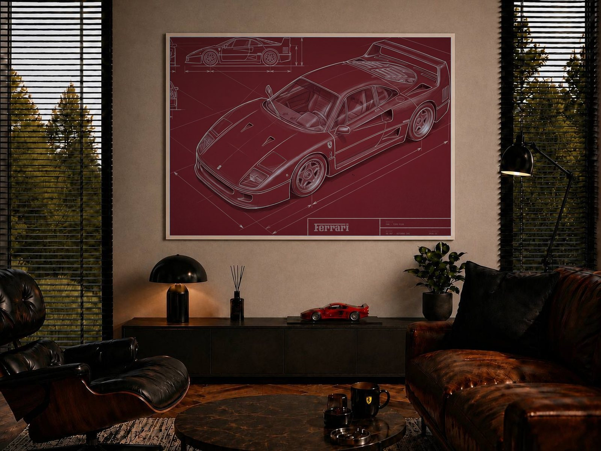
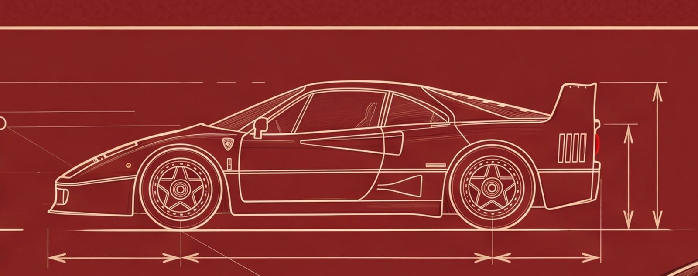
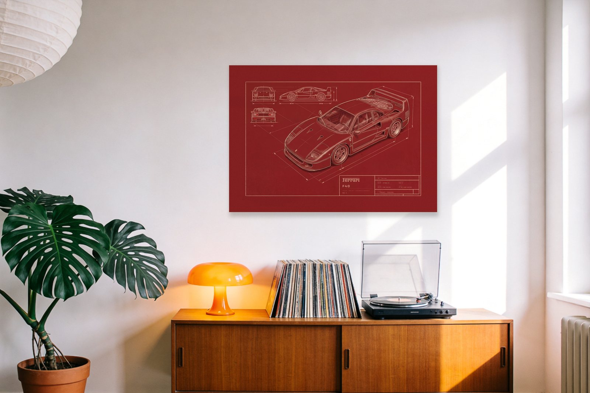
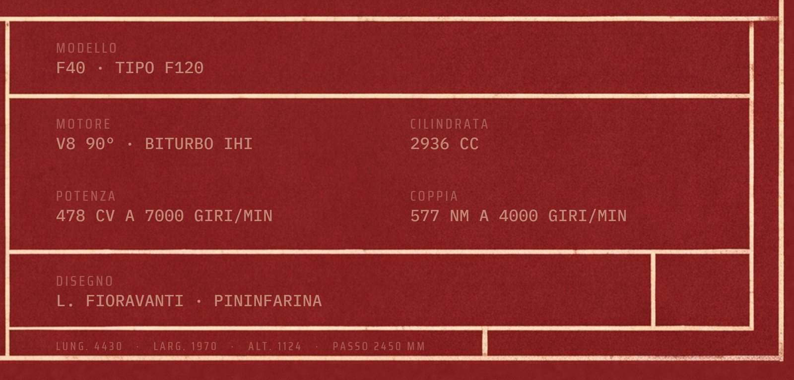
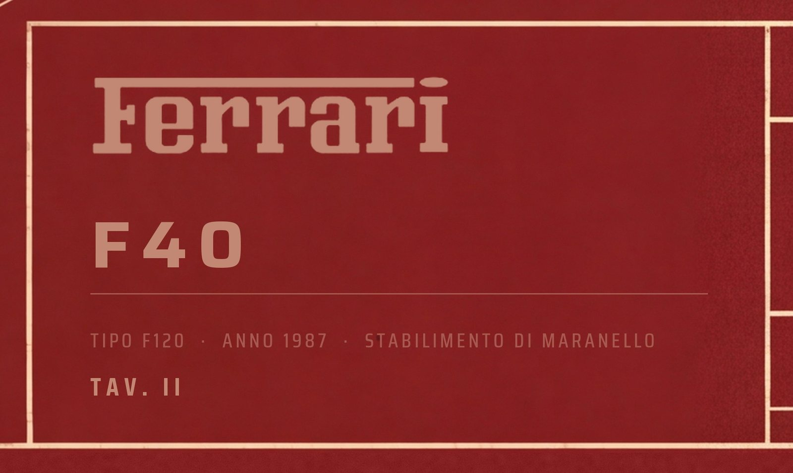

Ferrari F40
Awaiting approval
{kind=link}

{kind=link}

{kind=link}

{kind=link}

{kind=link}

{kind=link}
{kind=link}
The sheet at full print dimensions, 9933 × 7016 — A1 at 300 dpi, 12.0 MB. Byte for byte the file that goes to the printer; nothing here is re-encoded or resized.
Direct link, for the Prodigi order that order.mjs places: /print/Ferrari-F40-Ossido-A1-print.jpg
Ferrari F40 Technical Engineering Poster · Serie Ossido
The last Ferrari Enzo Ferrari signed off, and the first road car from Maranello past 320 km/h.
This is an A1 engineering study of the Ferrari F40 in the Ossido series: a deep oxide-red ground, the colour of red-lead primer, drawn in cream and bone-white line. A large shaded three-quarter study of the car dominates the sheet, with the orthographic elevations - front, side and rear - set beside it, projection lines and dimension arrows running across the drawing the way a working sheet accumulates them.
The title block carries the mechanical specification, and every figure in it is sourced to the manufacturer's own documentation for this model and year: 4430 mm long, 1970 mm wide, 1124 mm tall, on a 2450 mm wheelbase.
The Serie Ossido
This sheet is TAV. II in the Ossido series of the archive: one ground, one ink, one drawing standard across every model, so a collection reads as a set rather than as separate posters.
Condition
New. Printed on Enhanced Matte Art Paper, 200 gsm, archival pigment inks, unframed.
Dimensions
- 594 x 841 mm (A1)
- Landscape orientation
- Unframed, unmounted
Perfect for
- Ferrari collectors and Cavallino club members
- Owners of 1980s and 1990s supercars
- Collectors of factory technical documentation
- Studio, office and showroom interiors
- Anyone who had the poster on the wall as a child
Technical specification
- Modello: F40 · TIPO F120
- Disegno: L. FIORAVANTI · PININFARINA
- Motore: V8 90° · BITURBO IHI
- Cilindrata: 2936 CC
- Potenza: 478 CV A 7000 GIRI/MIN
- Coppia: 577 NM A 4000 GIRI/MIN
- Cambio: 5 MARCE · TRAZIONE POST.
- Prestazioni: 0-100 KM/H 4,7 S
- Velocità Max: 321 KM/H
- Lunghezza: 4430 mm
- Larghezza: 1970 mm
- Altezza: 1124 mm
- Passo: 2450 mm
Shipped with care using rigid packaging.
| Era | 1900-2000 |
|---|---|
| Manufacturer/Brand | Other -> Ferrari |
| Poster title | F40 Ossido |
| Estimated period | 1980s |
| Condition | A (excellent - mint condition) |
| Number of objects | 1 |
| Height | 594 |
| Width | 841 |
| Unit | mm |
| Autographed by a famous person | No |
| Designer/Artist | Other -> Lombardia Automobili |
| Subject | Transport, Graphic design, Illustrated, Vintage, Applied art, Technology, Other |
| Subject keywords (Other) | automobili, blueprint, technical drawing, engineering drawing, A1 poster, ferrari, f40, twin-turbo, v8, maranello, supercar, pininfarina |
| Country of origin | Italy |
| Specific region of origin | Maranello |
| Your reference label | ossido + f40 |
- Description: paste the DESCRIPTION block above VERBATIM, markdown markers stripped. Add nothing - no SHIPPING section, no upper-cased heads (founder, 2026-09-01).
- Images: 6, in order - **(04) noir room as the COVER**, (01) hero, (06) car profile close-up, (02) the room, (03) specs close-up, (05) logo close-up. Founder's order, 2026-09-01.
- Estimated value: EUR 200 (expert-only, buyers never see it)
- Set a reserve price: OFF
- Offer buy now: OFF
- Shipping preset: `global`
- Update preset if changes are made: ON (editing any rate here rewrites the preset for every future lot)
- Package size: Medium (an A1 tube is ~65 x 10 x 10 cm, ~0.4 kg; Small maxes at 38x26x3 cm and fails on both length and depth. Founder, 2026-09-01.)
- Pickup only: OFF
- Offer free shipping: OFF
- Offer free pickup: OFF
- Offer combined shipping: ON
- Shipping rates: EUR 25 to every listed country, EUR 30 rest of world
- Finish at **Save as draft**. Submit is the founder's, per lot.